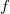
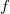

Fcdf
Fcdf-func
Description
Computes /math-800618943025315f869e4e1f09471012.png "F") cumulative distribution function at f, with parameters ndf, fdf, and tail. The parameters of ndf and fdf must all be positive, and the values in f must be positive. The parameter tail determines the returned probability is the lower tailed or upper tailed.
cumulative distribution function at f, with parameters ndf, fdf, and tail. The parameters of ndf and fdf must all be positive, and the values in f must be positive. The parameter tail determines the returned probability is the lower tailed or upper tailed.
The result, prob, is the probability that a single observation from a distribution with parameters ndf and fdf will fall in the interval [0, f] for lower-tailed, [f, ] for upper-tailed.
Syntax
double prob = fcdf(double f, double ndf, double fdf[, int tail])
Parameters
f
- Input, the value of the
/math-433e53f50d647e039aac4cb769c6ab10.png "F") variate,.
variate,.
ndf
- Input, the degrees of freedom of the numerator variance,
/math-ebfdd136331841a1b59f835c998ca593.png "\nu_1") , must be positive ( ).
, must be positive ( ).
fdf
- Input, the degrees of freedom of the denominator variance,
/math-1ff7af9a810bd160a7334c3de425ed9d.png "\nu_2") , must be positive ().
, must be positive ().
tail
-
Input, Optional. The tail probability type using for the F distribution
- 1 = the for upper tail probability
- 2 = the lower tail probability (Default if not set)
prob
- Output, the returned probability
Example
fcdf(1000,20,20,1)=; //ANS: 9.0714457299284E-26